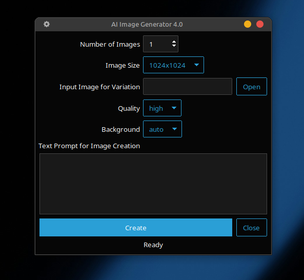

It's a Python program for Linux, Mac, Windows.
Edit the aimgui.ini file to set the model and theme.
'1024x1024', '1024x1536', '1536x1024'
Image file sizes allowed for this model.
The config file aimgui has several setting you can set up using a text editor.
| Setting | Description | Comments |
|---|---|---|
| model= | Gpt image model | See OpenAI website |
| theme= | Name of theme | See below |
| filemgr= | system file manager | See below |
| imgpath= | "." for default path | A directory path on your system |
gpt-image-2 — latest
gpt-image-1.5
gpt-image-1
gpt-image-1-mini
for instance explorer on Microsoft Windows
on MacOS finder
on Linux thunar, nemo, nautilus, ...
The default images path is a directory called images in the application
file's directory. Otherwise, You can enter a fullpath to any
directory on your system.
'cosmo', 'flatly', 'litera', 'minty', 'lumen',
'sandstone', 'yeti', 'pulse', 'united', 'morph',
'journal', 'darkly', 'superhero', 'solar', 'cyborg',
'vapor', 'simplex', 'cerculean'

Before using this application Python 3.x must be installed.
Use Python >=3.12 make sure you're using the latest OpenAI module
Use the requirements.txt file to install any modules you may be missing.
pip3 install -r requirements.txt
or
pip install -r requirements.txt
You will also have to Sign Up at https://openai.com/api/ and create an API Key.
Before using the program you will need to set up an Environment Variable
called 'GPTKEY' with the value of your OpenAI API Key.